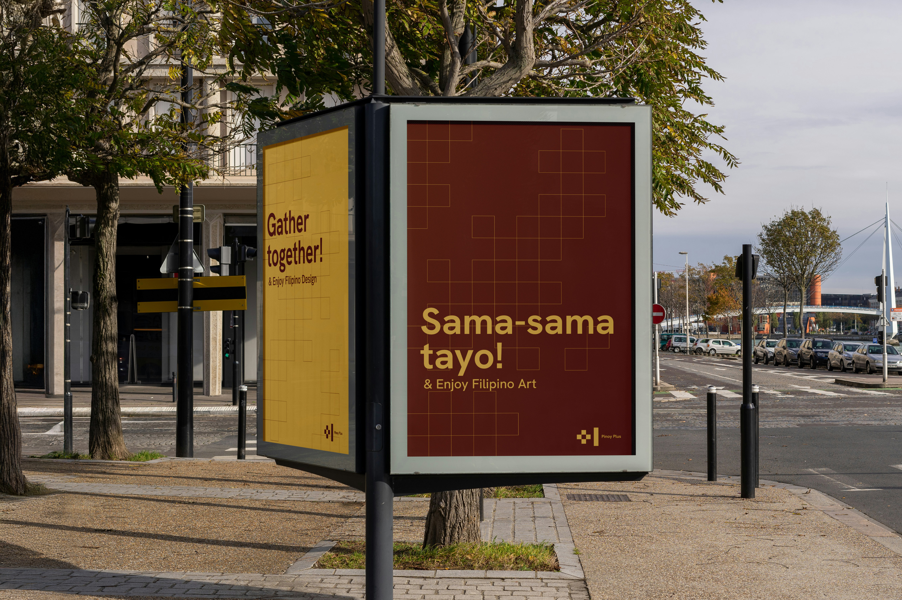
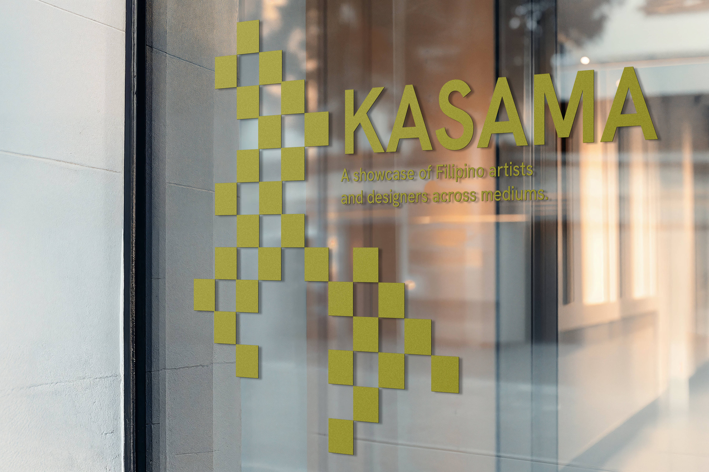
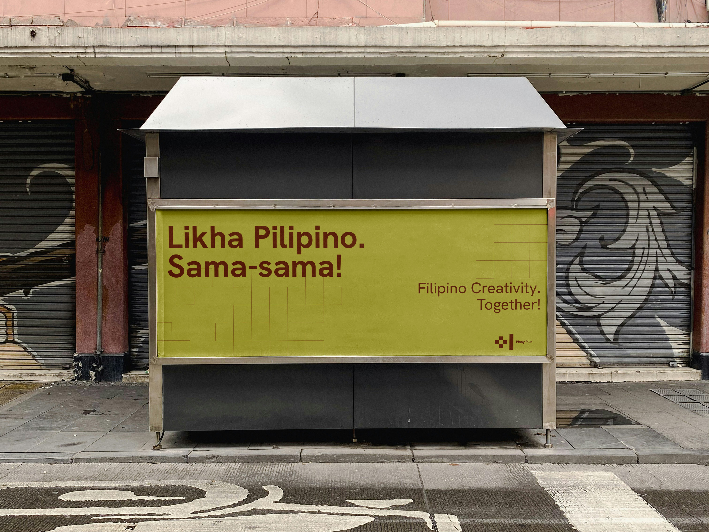

Set in Hanken Grotesk. Explore the site below, or open it in a new tab.

Interactive website for Filipino creatives, events, and scholarship programming.




Pinoy Plus is a campaign that aims to uplift Filipino artists and designers and make space for people to come together, bring a plus one, and enjoy one anothers' presence. The work spans identity, motion, signage, and a full website for creatives and community programming.
Set in Hanken Grotesk. Explore the site below, or open it in a new tab.


